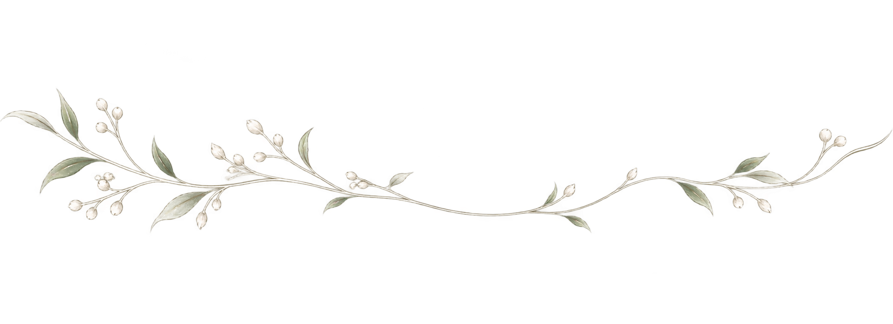

A1 疏叶枝条


实际生成提示词
Use case: stylized-concept. Create one standalone raster decoration asset for the top OR bottom of a vertical short-drama video. Landscape canvas. A single shallow horizontal ornament runs across the middle third of the canvas, with generous genuinely transparent space above and below and a little transparent padding at both ends. This is a reusable separate decoration, not a whole video frame and not paired top/bottom bands. Fine, clean, continuous line art, very little filled area, restrained and harmonious over real human footage. Soft pearl-white and very light warm-gray ink with only the tiny accent color explicitly requested. Keep lines readable rather than making the whole asset nearly invisible; final opacity is controlled later. No text, lettering, logo, watermark, border rectangle, paper, solid background, checkerboard drawing, mockup, heavy shadows or broad luminous halos. Real alpha transparency. Subject: two or three slender gently curving botanical stems extending inward from opposite ends, with a few small oval leaves and tiny buds. An asymmetrical airy arrangement; left side a little fuller, center mostly open, right side lighter. Delicate hand-drawn botanical contours with a tiny amount of desaturated sage in a few leaves. No large flowers, detailed leaf veins, dense bouquet, thick metallic outlines or gold glow.